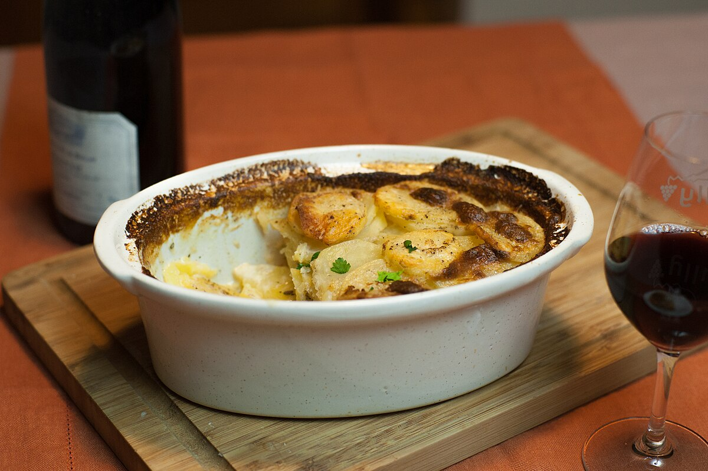

Main Page
Gratin Dauphinois

The fast and delicious version of the Gratin Dauphinois
A staple of French cuisine, gratin dauphinois made its official debut in 1788 in the province of Dauphiné, during a meal served to officers in the town of Gap. Generous, tasty, and easy to prepare, this traditional dish made with potatoes and milk is particularly enjoyable during the winter months. Serve it as a main course or side dish for a convivial family meal! Here's the recipe for a super-simple gratin dauphinois!
Ingredients
- Firm Potatoes - 2 kilograms
- Butter - 100 grams
- Single cream - 3 dl
- Whole milk - 1 l
- Garlic - 5 cloves
- Nutmeg - 1 pinch
- Salt - 4 pinches
- Pepper - 2 pinches
Steps
- Prepare the potatoes and garlic
: Peel the potatoes, wash them, and slice them into fairly thin rounds using a mandolin. Peel and crush the garlic cloves.
- Cooking potatoes in milk: In a large saucepan, bring the whole milk, salt, pepper, nutmeg, and garlic to a boil. Add the potato slices to the boiling, seasoned milk. Cook for about ten minutes until they are well soaked and tender.
- Assembling the gratin dauphinois: Preheat the oven to 180°C (gas mark 6). Arrange the potato slices in a buttered gratin dish. Pour the cream and milk over the top. Dot the butter over the top of the dish.
- Baking the gratin dauphinois: Bake your gratin dauphinois for 45 minutes to 1 hour, until it is golden brown.